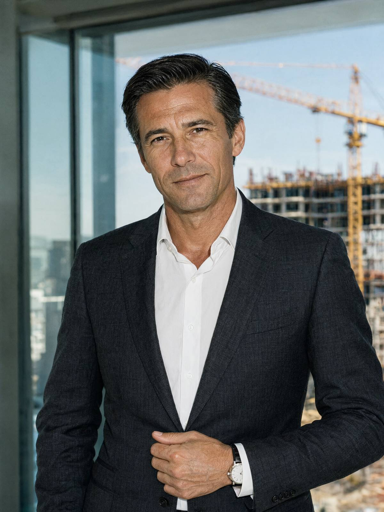

Місто: Івано-Франківськ
Дата: 17.10.2026
Час початку: 14:00 Час закінчення: 14:40
Місце: офіс ТОВ «Лаз-Девелопмент», вул. Пасічна, 41, секція 1, нежитлове приміщення 2 (на прохання особи)
Відібрав: майор поліції Волков Д.С., старший слідчий в ОВС СУ ГУНП в Івано-Франківській області
Особа: Стефурак Едуард Романович, 47 р., директор ТОВ «Лаз-Девелопмент» (забудовник ЖК «Дем'янів лаз»), тел. +380 67 220 05 05.
Особі роз'яснено право не свідчити щодо себе та близьких родичів (ст. 63 Конституції України). Пояснення надає добровільно. На столі — макет ЖК з другою чергою, еспресо для слідчого (від кави не відмовився — прим. слідчого: кава не з «Чорного зерна»).
Питання: Які у вас були стосунки з Палійчуком В.І.?
Відповідь: Василь — мій партнер, ми друзі. Не з дитинства, як ви з ним, Дмитре Сергійовичу, — я знаю, що ви разом росли на Пасічній, — але друзі. Він першим повірив у цей проєкт, коли тут ще стояли хати й шиномонтаж. Продав нам батьківську ділянку, у 2024-му зайшов інвестором у другу чергу — двадцять відсотків. Для мене це величезна втрата. І людська, і, не буду лукавити, ділова.
Питання: Друга черга ЖК — на якій стадії?
Відповідь: Проєкт. Секції 5 і 6, детальний план території — на погодженні в міськраді. Це публічна інформація, все на сайті.
Питання: Чи потрібна для другої черги ділянка Яковишин С.П., вул. Пасічна, 41-А?
Відповідь: Є різні варіанти в'їзду. Проєктувальники розглядали декілька. Ділянка пані Світлани — один із варіантів, найзручніший, не заперечую. Ми їй пропонували трикімнатну квартиру в першій черзі, з ремонтом, на будь-якому поверсі, плюс компенсацію за переїзд. Вона відмовилась. Ми поважаємо. Людина має право жити там, де жила. Я не тисну на пенсіонерок, у мене мама такого ж віку.
Питання: Коли ви востаннє говорили з Палійчуком?
Відповідь: На тому тижні, здається. У вівторок чи в середу, по робочих питаннях, — графік фінансування на листопад.
Питання: 15.10 ви з ним говорили?
Відповідь: Ні. П'ятнадцятого — ні, не говорив. У мене був насичений день, увечері зустріч.
Питання: Де ви були ввечері 15.10?
Відповідь: З 21:00 до пів на першу — ресторан «Шіпот» на Незалежності, з колегами з міськради. Неформальна вечеря, обговорювали благоустрій мікрорайону. Імена назву, якщо буде потрібно офіційно, — але, розумієте, люди публічні, я б не хотів, щоб їх без потреби смикали. Потім таксі додому. Офіціант мене знає, рахунок я закривав карткою.
Питання: Що вам відомо про БФ «Родина»?
Відповідь: Ми підтримуємо багато благодійних організацій. Дитячий будинок у Надвірній, хоспіс, ветеранів. «Родина» — серед них, так. Вони займаються самотніми людьми похилого віку на Пасічній, реабілітацією, — соціально відповідальний бізнес мусить таке підтримувати. Деталі — у фінансового відділу.
Питання: Вам відомо, що до Яковишин С.П. приїхав «онук з Італії»?
Відповідь: Чув від мешканців. Добре, що в людини знайшлася рідня. Під старість це важливо.
Питання: Що б ви хотіли додати?
Відповідь: Що ми повністю відкриті до співпраці. Охорона ЖК, «Лаз-Сервіс», — все, що треба, вам дадуть. Я особисто сказав Руслану Михайловичу, щоб давав усе. І знайдіть того, хто це зробив. Це ж удар і по репутації комплексу.
З моїх слів записано вірно, мною прочитано. Зауважень немає.